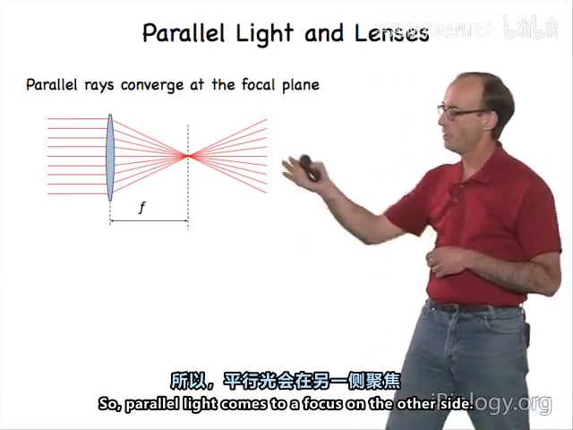
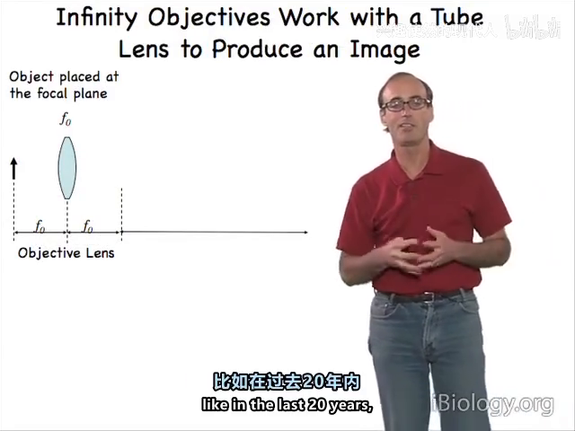
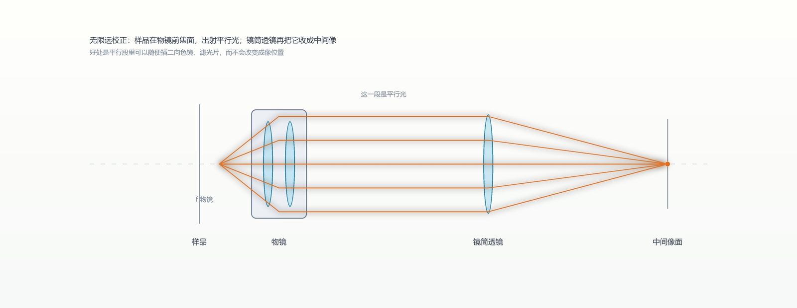
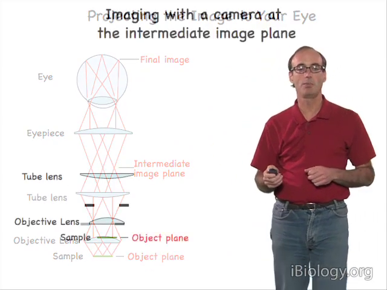
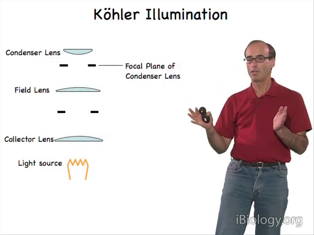
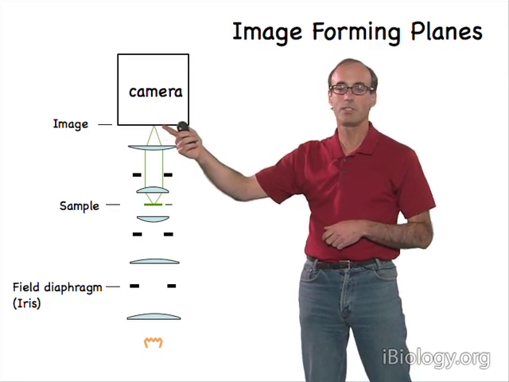
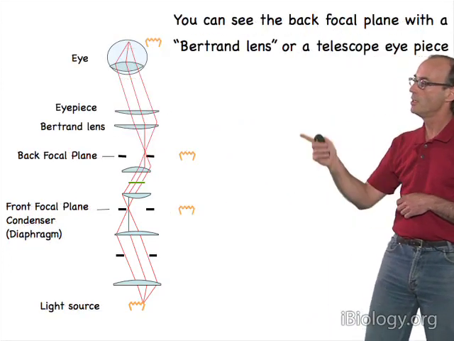
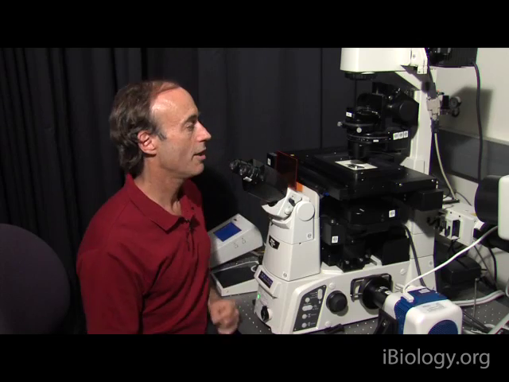

02 显微光路与柯勒照明：光在机器里怎么走
一句话：样品在物镜前焦面 → 物镜出平行光 → 镜筒透镜再聚焦成中间像 → 相机放在中间像面；照明另走一条路，为的是"照得匀"而不是"照得亮"。
2.1 一条互易关系，撑起整台显微镜
焦面上的点 → 出射平行光；平行光 → 会聚到焦面。
这条关系是双向的，所以同一组透镜既能用来成像，也能用来照明——柯勒照明就是把它反过来用的结果。

2.2 两种物镜：160 mm 与"无限远"
- 老式有限远：物镜直接把样品成像在镜筒内约 160 mm 处，中间像面就在那里。
- 现代无限远校正：样品在物镜前焦面，物镜出射的是平行光，再由镜筒透镜把它重新会聚成中间像。
改的理由不是画质，而是自由度：平行光段里可以随便插二向色镜、滤光片、分光镜而不改变成像位置——所有荧光附件都建立在这个前提上。


系统总放大率 = 镜筒透镜焦距 / 物镜焦距。所以"100×"不是物镜一个人的功劳，是物镜和镜筒透镜的比值。
2.3 成像链：光最后落在哪儿
样品 → 物镜 →（平行光段）→ 镜筒透镜 → 中间像面 → 目镜 → 眼睛，或者直接放相机。
- 相机最简单的放法就是放在中间像面；
- 要再放大，就加一个投影目镜做第二次成像；
- 目视和拍照的焦面可能不一致（第 03 章有专门的调法）。

2.4 柯勒照明：为什么不能把灯丝直接照到样品上
临界照明把灯丝直接成像到样品上：亮，但把灯丝的不均匀一起印上去了。
柯勒照明换了个思路：先把光源成像到聚光镜的前焦面，光从那里发散、经聚光镜变成平行光照满样品。于是样品面是均匀的，光源的纹理不出现在像里。

2.5 两个光阑，分工完全不同
| 光阑 | 位置（与谁共轭） | 管什么 | 怎么调 |
|---|---|---|---|
| 视场光阑 | 与样品面共轭 | 只决定"照亮多大范围"，收小可挡杂散光、提高对比 | 开到略超视野，再大只会添杂散光 |
| 孔径光阑 | 与物镜后焦面共轭 | 决定照明光锥角度 = 有效 NA，同时管分辨率与对比度 | 标准做法开到 3/4 |


2.6 柯勒四步（P6 实操）
- 先对焦样品，两个光阑都先开大取光；
- 关视场光阑，升降聚光镜，直到光阑边缘在样品面最锐（因为两者必须共轭）；
- 用两只螺丝把光阑像居中（偏心 = 聚光镜不同轴）；
- 视场光阑开到略超视野，孔径光阑开到 3/4。

反证：如果聚光镜离焦，光源像会落到样品上，就退化成临界照明了——一眼能看出来不均匀。
本章自测
- 无限远校正系统里，总放大率由哪两个焦距决定？为什么"100× 物镜"配不同镜筒透镜会得到不同放大率？
- 视场光阑开得过大、孔径光阑开得过大，分别会带来什么问题？
- 为什么柯勒照明能让样品照明均匀，而临界照明不能？
回看：P5（22:46）、P6（11:19）。